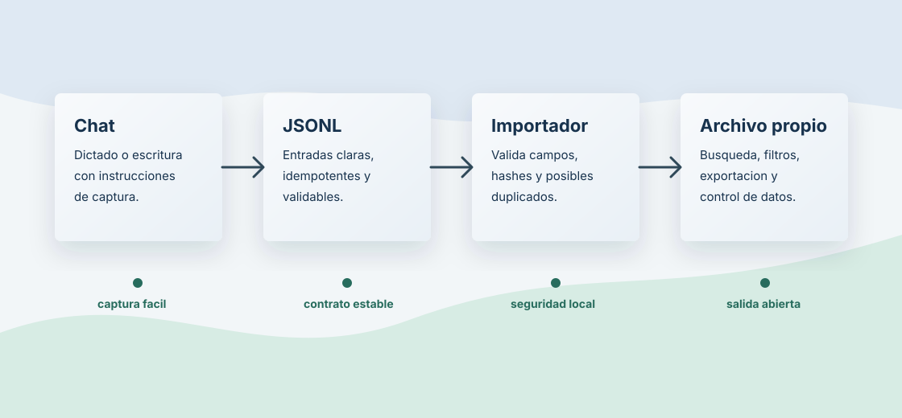

Captura
El usuario dicta o escribe en un chat con instrucciones de estructuracion.
Diario estructurado, privado y exportable
Un sistema para dictar eventos, ideas, conversaciones y tareas en lenguaje natural, importarlos como datos limpios y conservar siempre una salida propia.

Flujo inicial
El usuario dicta o escribe en un chat con instrucciones de estructuracion.
Cada linea contiene una entrada con id estable, fecha, tipo, tags, personas y hash.
El importador recalcula hashes, evita duplicados y marca conflictos revisables.
Los registros se pueden sacar como Markdown, CSV, JSON o JSONL.
Estado actual
El repositorio ya contiene especificacion de producto, modelo de datos, formato de importacion y un importador local en Python con SQLite.
Documentacion